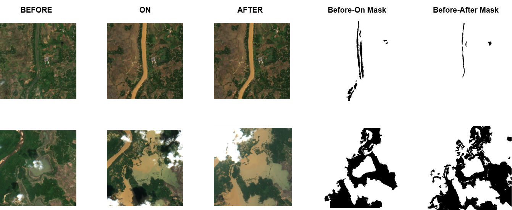

Weekly Progress
Week 7 - MSI Index-Based Change Detection & Annotation Upgrade
This week focused on MSI index-based change detection and improving annotations to include both Before->On and Before->After masks.
MSI indices: NDVI / NDWI
Δ-index change maps
Before->On & Before->After annotation
Paper reading + notes
At a glance
Index-based progress
Main goals, progress, and next actions from Week 7.
Objectives
- Understand delta-index change detection using NDVI and NDWI.
- Study index behavior from selected literature.
- Extend annotation to both Before->On and Before->After.
Work Done
- Reviewed MSI index-based change workflows.
- Read and summarized papers in the
Papers/folder. - Updated labeling protocol images.
- Prepared a sample tri-temporal annotation view.
Tools / Methods Used
- Sentinel-2 Red/NIR/SWIR bands for NDVI and NDWI.
- Delta-index maps for fast change cues.
- Web annotation tool with side-by-side QA checks.
Results / Observations
- NDVI highlights greenness shifts, NDWI highlights moisture shifts.
- Dual masks capture both immediate and persistent change.
- Delta-index maps are useful as baseline signals.
Next Week Plan
- Compute NDVI/NDWI across more events.
- Set consistent normalization and threshold rules.
- Run a small baseline using index features.
Details
Concept, annotation, and papers
Compact notes and references used this week.
MSI Index-Based Change Detection
Compute indices per timestamp (Before/On/After), then analyze delta values to detect change.
NDVI = (NIR - Red) / (NIR + Red)
NDWI ~= (NIR - SWIR) / (NIR + SWIR)
Delta(before->on) = Index_on - Index_before
Delta(before->after) = Index_after - Index_before
- Red tracks chlorophyll absorption.
- NIR rises with healthy vegetation reflectance.
- SWIR responds to moisture and water-content changes.
Annotation Upgrade: Before->On and Before->After
We now annotate both pairs to capture immediate and persistent change more reliably.

- Before->On: immediate event-period change.
- Before->After: persistent post-event change.
- Together: stronger supervision from one triplet.
Papers Read
References used for index understanding and interpretation:
- NDWI.pdf Water/moisture-sensitive index behavior and interpretation.
- Spatial Patterns of NDVI Vegetation Greennesspdf.pdf Spatial behavior of NDVI/NDWI from Sentinel-2 imagery.
NDWI.pdf
Spatial NDVI paper
What I Learned
- NDWI complements NDVI by exposing moisture-related vegetation change.
- Combining indices helps separate different change types.
- Band choice and alignment are important for reliable comparisons.